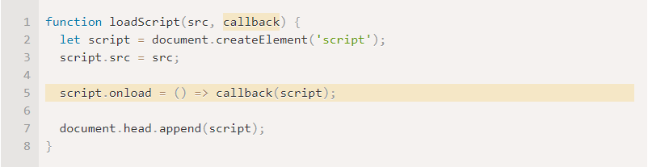
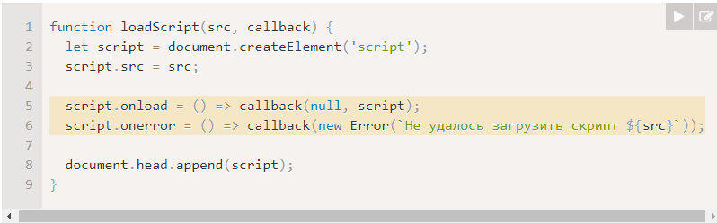
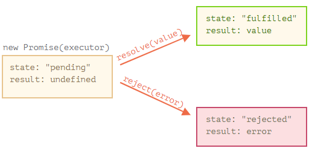
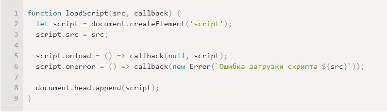
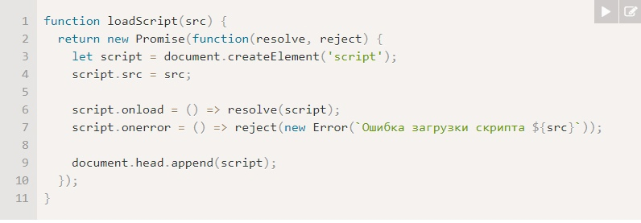
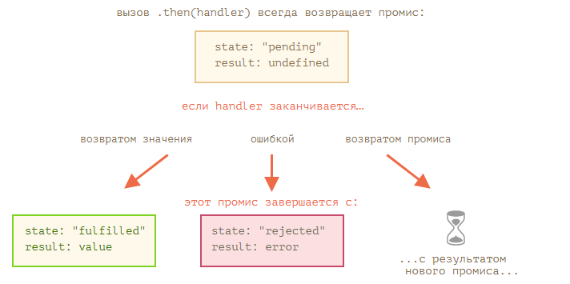
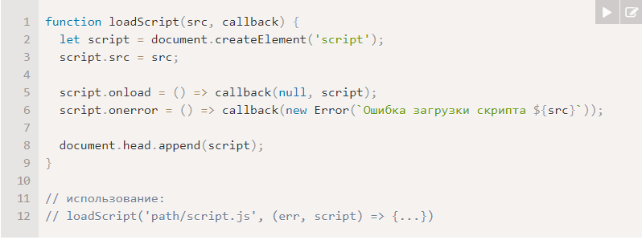
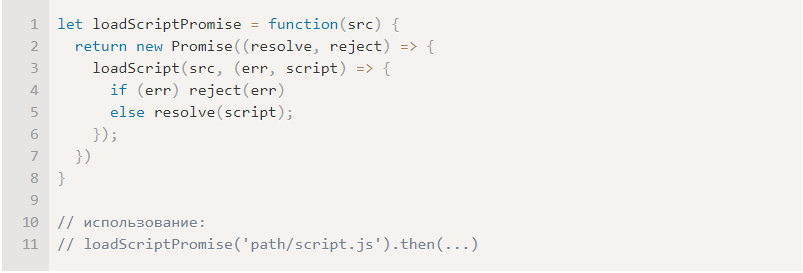
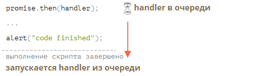
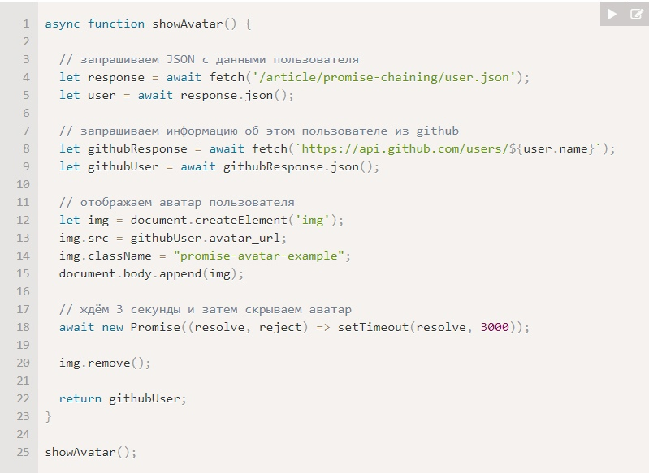

Обозначения:
Зеленый блок = прогресс изучения; Зеленая рамка = повторил, классно.
Синий блок = полезная подсказка; Синяя рамка = очень важно, очень классно.
Красный блок = задача; Красная рамка = на мой взгляд не стоит внимания.
11.1 Введение: колбэки
Основы
Многие действия в JavaScript асинхронные. Пример: loadScript('/my/script.js'); // загрузка скрипта будет завершена не сейчас, а потом.
Если после вызова loadScript(…) есть какой-то код, то он не будет ждать, пока скрипт загрузится.
Если попробуем вызвать функцию после loadScript(…), то получим ошибку. // такой функции не существует!
Для этого и нужны колбэки. Передадим функцию callback вторым аргументом в loadScript, чтобы вызвать её, когда скрипт загрузится:

Теперь, если мы хотим вызвать функцию из скрипта, нужно делать это в колбэке:
loadScript('/my/script.js', function() {newFunction(); // теперь всё работает});
Смысл такой: вторым аргументом передаётся функция (обычно анонимная), которая выполняется по завершении действия.
Перехват ошибок
А что если загрузить скрипт не удалось? Колбэк должен уметь реагировать на возможные проблемы.
Мы вызываем callback(null, script) в случае успешной загрузки и callback(error), если загрузить скрипт не удалось.

Пример: loadScript('/my/script.js', function(error, script) {if (error) {// обрабатываем ошибку} else {// скрипт успешно загружен}});
Колбэк в колбэке (адская пирамида вызовов)
Как нам загрузить два скрипта один за другим: сначала первый, а за ним второй?
Первое, что приходит в голову, вызвать loadScript ещё раз уже внутри колбэка.
Но таких вызовов может быть бесконечность. Это называют «адом колбэков».
Мы можем попытаться решить эту проблему, изолируя каждое действие в отдельную функцию (то же, но без вложенности).
Задачи. Анимация круга с помощью колбэка
.circle {
transition-property: width, height, margin-left, margin-top;
transition-duration: 2s;
position: fixed;
transform: translateX(-50%) translateY(-50%);
background-color: red;
border-radius: 50%;
}
.message {
font-size: 16px;
line-height: 200px;
text-align: center;
}
function go() {
showCircle(150, 150, 100, div => {
div.classList.add('message-ball');
div.append("Hello, world!");
});
}
function showCircle(cx, cy, radius, callback) {
let div = document.createElement('div');
div.style.width = 0;
div.style.height = 0;
div.style.left = cx + 'px';
div.style.top = cy + 'px';
div.className = 'circle';
document.body.append(div);
setTimeout(() => {
div.style.width = radius * 2 + 'px';
div.style.height = radius * 2 + 'px';
div.addEventListener('transitionend', function handler() {
div.removeEventListener('transitionend', handler);
callback(div);
});
});
}
11.2 Промисы
Основы
Синтаксис создания Promise: let promise = new Promise(function(resolve, reject) {// функция-исполнитель (executor)});
Функция, переданная в конструкцию new Promise, называется исполнитель (executor). Когда Promise создаётся,
она запускается автоматически. Она должна содержать «создающий» код, который когда-нибудь создаст результат.
resolve и reject – это колбэки, которые предоставляет сам JavaScript. Наш код – только внутри исполнителя.
Когда он получает результат, сейчас или позже – не важно, он должен вызвать один из этих колбэков:
1) resolve(value) — если работа завершилась успешно, с результатом value.
2) reject(error) — если произошла ошибка, error – объект ошибки.
У объекта promise, возвращаемого конструктором new Promise, есть внутренние свойства:
1) state («состояние») — вначале "pending" («ожидание»), потом меняется на "fulfilled"
(«выполнено успешно») при вызове resolve или на "rejected" («выполнено с ошибкой») при вызове reject.
2) result («результат») — вначале undefined, далее изменяется на value при вызове resolve(value) или на error при вызове reject(error).
Так что исполнитель по итогу переводит promise в одно из двух состояний:

Может быть что-то одно: либо результат, либо ошибка
Исполнитель должен вызвать что-то одно: resolve или reject. Состояние промиса может быть изменено только один раз.
Все последующие вызовы resolve и reject будут проигнорированы.
Потребители: then, catch, finally
1) then: promise.then(function(result) { /* обработает успешное выполнение */ },function(error) { /* обработает ошибку */ });
Первый аргумент метода .then – функция, которая выполняется, когда промис переходит в состояние «выполнен успешно», и получает результат.
Второй аргумент .then – функция, которая выполняется, когда промис переходит в состояние «выполнен с ошибкой», и получает ошибку.
Пример: promise.then(result => alert(result), // выведет "done!" через одну секундуerror => alert(error) // не будет запущена);
2) catch: Если мы хотели бы только обработать ошибку, то можно использовать null в качестве первого аргумента: .then(null, errorHandlingFunction).
Или можно воспользоваться методом .catch(errorHandlingFunction), который сделает тоже самое:
Вызов .catch(f) – это сокращённый, «укороченный» вариант .then(null, f).
3) finally: Вызов .finally(f) похож на .then(f, f), в том смысле, что f выполнится в любом случае, когда промис завершится: успешно или с ошибкой.
finally хорошо подходит для очистки, например остановки индикатора загрузки, его ведь нужно остановить вне зависимости от результата.
Пример: loadScript
Вариант с колбэками:

Вариант с промисами:

Задачи. Можно ли "перевыполнить" промис?
1
Задачи. Задержка на промисах
function delay(ms) {
return new Promise(resolve => setTimeout(resolve, ms)); // resolve = callback
}
11.3 Цепочка промисов
Основы
Результат первого промиса передаётся по цепочке обработчиков .then
1) Начальный промис успешно выполняется через 1 секунду (*)
2) Затем вызывается обработчик в .then (**).
3) Возвращаемое им значение передаётся дальше в следующий обработчик .then (***)
4) …и так далее.
Если обработчик в .then (или в catch/finally, без разницы) возвращает промис, последующие элементы цепочки ждут,
пока этот промис выполнится. Когда это происходит, результат его выполнения (или ошибка) передаётся дальше.

Задачи. Промисы: сравните then и catch
Нет. Во втором пример ошибка останется необработанной.
11.4 Промисы: обработка ошибок
Основы
Цепочки промисов отлично подходят для перехвата ошибок. Если промис завершается с ошибкой,
то управление переходит в ближайший обработчик ошибок. Пример
fetch('https://no-such-server.blabla').then(response => response.json()).catch(err => alert(err)) // TypeError: failed to fetch
Неявный try…catch
.catch перехватывает все виды ошибок в промисах: будь то вызов reject() или ошибка, брошенная в обработчике при помощи throw.
Поэтому обрабатываются все синхронные ошибки. Если ошибка генерируется не по ходу выполнения кода, а позже. Поэтому промис не может обработать её.
Например, если ошибка находится в setTimeout.
Пробрасывание ошибок
Необходимо размещать .catch там, где мы хотим обработать ошибки и знаем, как это сделать. Обработчик может проанализировать
ошибку (могут быть полезны пользовательские классы ошибок) и пробросить её, если ничего не знает о ней (возможно, это программная ошибка).
Необработанные ошибки
Что произойдёт, если ошибка не будет обработана? Например, мы просто забыли добавить .catch.
JavaScript-движок отслеживает такие ситуации и генерирует в этом случае глобальную ошибку.
В браузере мы можем поймать такие ошибки, используя событие unhandledrejection:
// объект события имеет два специальных свойства: promise (промис, который сгенерировал ошибку), reason (объект ошибки, которая не была обработана)
window.addEventListener('unhandledrejection', function(event) {alert(event.promise);alert(event.reason);});
Задачи. Ошибка в setTimeout
Нет.
11.5 Promise API
Основы
В классе Promise есть 5 статических методов.
1) Promise.all(promises) – ожидает выполнения всех промисов и возвращает массив с результатами.
Если любой из указанных промисов вернёт ошибку, то результатом работы Promise.all будет эта ошибка, результаты остальных промисов будут игнорироваться.
2) Promise.allSettled(promises) (добавлен недавно) – ждёт, пока все промисы завершатся и возвращает их результаты в виде массива с объектами, у каждого объекта два свойства:
state: "fulfilled", если выполнен успешно или "rejected", если ошибка,
value – результат, если успешно или reason – ошибка, если нет.
3) Promise.race(promises) – ожидает первый выполненный промис, который становится его результатом, остальные игнорируются.
4) Promise.resolve(value) – возвращает успешно выполнившийся промис с результатом value.
5) Promise.reject(error) – возвращает промис с ошибкой error.
Из всех перечисленных методов, самый часто используемый – это, пожалуй, Promise.all.
11.6 Промисификация
Основы
Мы берём функцию, которая принимает колбэк и меняем её, чтобы она вместо этого возвращала промис.
Такие преобразования часто необходимы в реальной жизни, так как многие функции и библиотеки основаны на колбэках,
а использование промисов более удобно, поэтому есть смысл «промисифицировать» их.
Например, у нас есть loadScript(src, callback):

Из неё сделаем это:

На заметку
Промисификация – это отличный подход, особенно, если вы будете использовать async/await, но она не является тотальной заменой любых колбэков.
Помните, промис может иметь только один результат, но колбэк технически может вызываться сколько угодно раз.
Поэтому промисификация используется для функций, которые вызывают колбэк только один раз. Последующие вызовы колбэка будут проигнорированы.
11.7 Микрозадачи
Очередь микрозадач
Асинхронные задачи требуют правильного управления. Для этого стандарт предусматривает внутреннюю очередь PromiseJobs,
более известную как «очередь микрозадач (microtask queue)»
Когда промис выполнен, его обработчики .then/catch/finally попадают в очередь. Они пока не выполняются.
Движок JavaScript берёт задачу из очереди и выполняет её, когда он освободится от выполнения текущего кода.

Что делать если порядок имеет значение для нас? Использовать .then:
Promise.resolve().then(() => alert("промис выполнен!")).then(() => alert("код выполнен"));
Обработчики .then/catch/finally вызываются после выполнения текущего кода.
Если нам нужно гарантировать выполнение какого-то кода после .then/catch/finally,
то лучше всего добавить его вызов в цепочку .then.
Необработанные ошибки
"Необработанная ошибка" возникает в случае, если ошибка промиса не обрабатывается в конце очереди микрозадач.
Поэтому стоит добавлять .catch() для обработки ошибок.
11.8 Async/await
Асинхронные функции
Существует специальный синтаксис для работы с промисами, который называется «async/await».
1) async ставится перед функцией, вот так: async function f() {return 1;}
async функция всегда возвращает промис.
2) await работает только внутри async–функций. let value = await promise;
await заставит интерпретатор JavaScript ждать до тех пор, пока промис справа от await не выполнится.
После чего оно вернёт его результат, и выполнение кода продолжится.
По сути, это просто «синтаксический сахар» для получения результата промиса, более наглядный, чем promise.then.
Пример работы с async/await:

Асинхронные методы классов
Для объявления асинхронного метода достаточно написать async перед именем:
class Waiter {async wait() {return await Promise.resolve(1);}}
new Waiter().wait().then(alert); // 1
Обработка ошибок
На практике промис может завершиться с ошибкой не сразу, а через некоторое время. В этом случае будет задержка, а затем await выбросит исключение.
Такие ошибки можно ловить, используя try..catch. В случае ошибки выполнение try прерывается и управление прыгает в начало блока catch:

Задачи. Перепишите, используя async/await
const loadJson = async (url) => {
let response = await fetch(url);
if (response.status == 200) {
let json = await response.json();
return json;
}
throw new Error(response.status);
}